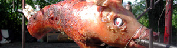

Gefülltes Spanferkel
5,5 von 6beim metzger mind. eine woche vorher das ferkel bestellen und bei einem metallbauschlosser
eine lange (ca. 150 cm) eisenstange kaufen. genügend marinade mit olivenöl, senf, pfeffer, salz,
parika, knoblauch, rosmarin und thymian vorbereiten. das aufgebarte schwein als erstes innen
mit marinadebestreichen und mit peperoni, karotten und zwiebeln füllen. mit draht gut zunähen.
die beine ebenfalls mit drath satt nach hinten bzw. vorne binden. ohren, schwänzli und pfoten mit alu
bedecken. nun je nach hitze und grösse das ferkel 3-4 stunden bei ständigem drehen garen.
